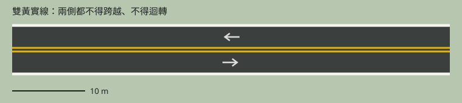

分向限制線 第165條
劃分雙向車道，禁止車輛跨越行駛，並不得迴轉。

規格
| 類別 | 禁制標線 |
|---|---|
| 顏色 | 黃 |
| 線型 | 雙實線 |
| 尺寸 | 雙黃實線，線寬 10 公分，兩線間隔 10 公分。 |
意義
劃分雙向車道，禁止車輛跨越行駛，並不得迴轉。
設置地點
整段劃設；交岔路口或允許迴轉的路段除外。道路有中央分向島時，得在分向島兩側加繪單黃實線，與島至少間隔 10 公分。
跨越或通行
不得跨越，不得迴轉。
常見誤解
- 雙黃線和第166條的「雙向禁止超車線」外觀相同（尺寸也相同），差別在設置目的：分向限制線是整段劃分雙向車流，禁止超車線是針對視距不足或接近路口的路段。
出處
道路交通標誌標線號誌設置規則（民國115年03月11日修正）第165條。全國法規資料庫原文
本頁為條文整理，用字以原文為準；標「整理說明」者為本站補充。最後更新：2026-11-13